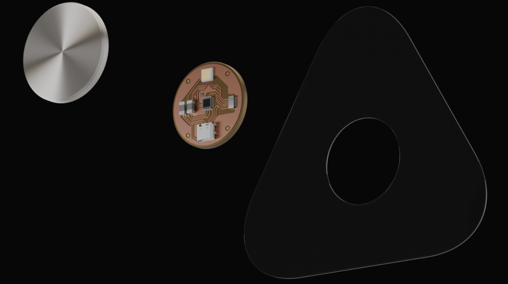

Interface Disc
Returns stored memory to conscious experience.
The sensor continuously senses your body.
Detecting reactions as they happen. It captures
what you feel even before you understand it.
So every moment can be stored and experienced .

Returns stored memory to conscious experience.
Detects, processes, and encodes physiological reactions into memory.
A minimal protective shell engineered to integrate seamlessly with the body.
01/Always Aware
Continuously sensing your body in real time. m.v remains attached and monitors physiological signals such as heart rate, skin conductivity, and breathing patterns, creating a constant stream of data without interrupting the moment.
02/Nothing Gets Missed
Detecting significant reactions as they happen, m.v identifies moments of heightened response based on intensity and deviation from baseline, capturing events the user may not consciously notice.
03/Reactivation
Reintroducing the sensation back to the body, m.v translates captured signals into physical stimuli, allowing the user to experience the original feeling associated with each recorded moment.